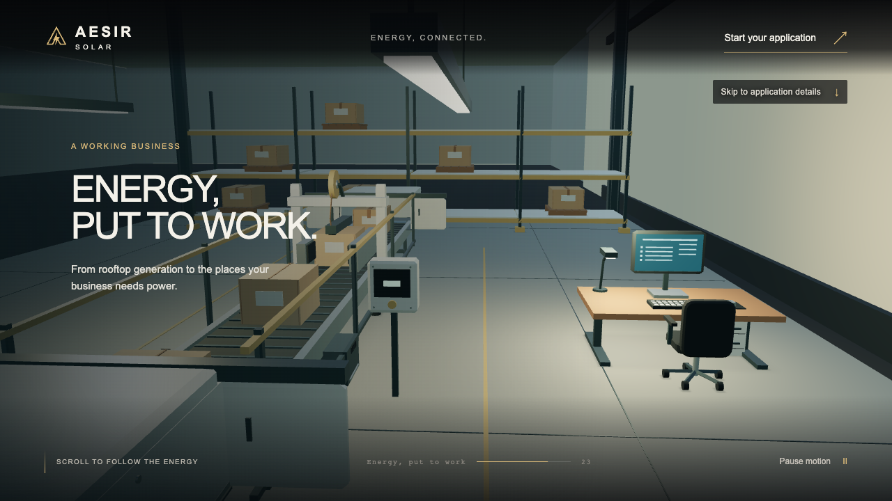
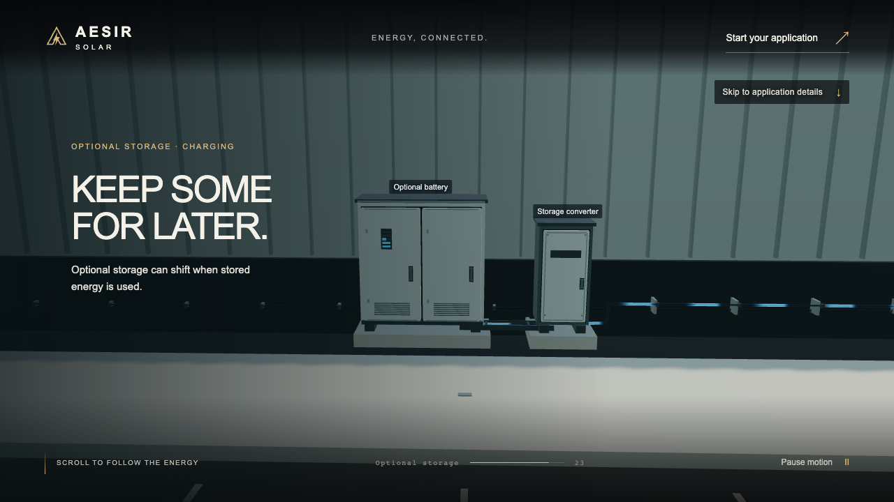
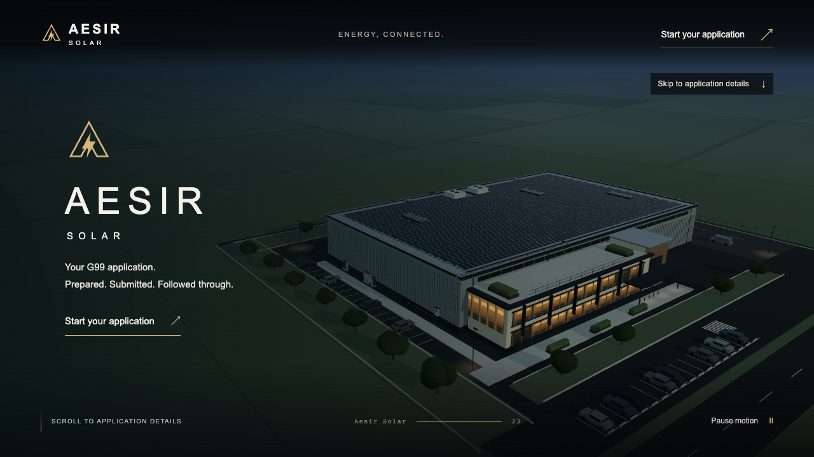
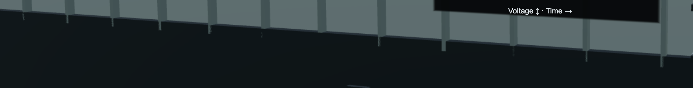
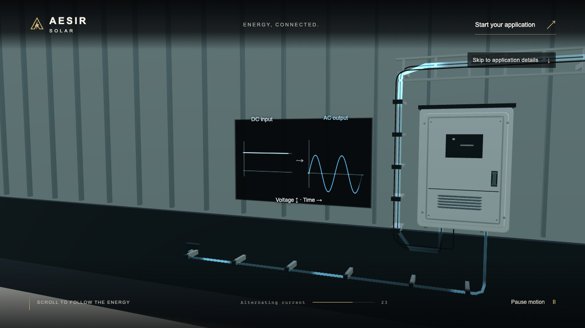
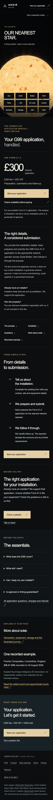

The completed film with a calmer working-business ending and a shorter route to the application. Local evidence; physical-phone and broader-browser certification remain open.



Each includes a complete 24-second packing cycle. Recording workload is separate from the frame-time benchmark.
Before: supplied screenshots. After: separated physical geometry, with the grated/ribbed pattern retained.



All five viewport capture sets and machine-readable observations are in the final/, pages/ and motion/ folders. Benchmark and full-suite logs are kept separately.